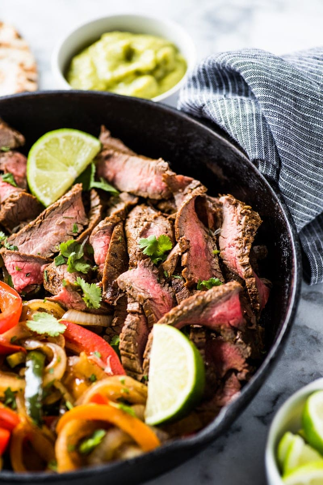

Steak Fajitas

Succulent citrus marinated steak fajitas
What's a better weeknight meal than steak fajitas.
Filled with delicious marinated skirt steak, seared veggies, and chorizo.
Ingredients
Marinade
- 1/4 Cup Olive Oil
- 1/4 Cup Orange Juice
- Juice of One Lime
- 1 tbsp Minced Garlic
- 2 tsp Ground Cumin
- 2 tsp Chili Powder
- 1 tsp Dried Oregano
- 1 tsp Smoke Paprika
Meat/Veg
- Skirt Steak (1.5-2lbs
- Medium Yellow Onion
- Poblano Pepper
- Bell Pepper
- Tortillas and Fixins!
Steps
- Mix together ingredients for the marinade and marinade the steak in it for at least 2 hours
- Heat cast iron pan on medium high heat, put in 1 tbsp of vegetable oil, and sear sliced steak
- When steak is cooked add remove from pan and add in veggies and chorizo sausage
- Cook until veggies are tender and chorizo is slightly crisped, add back in steak, incorporate and serve!